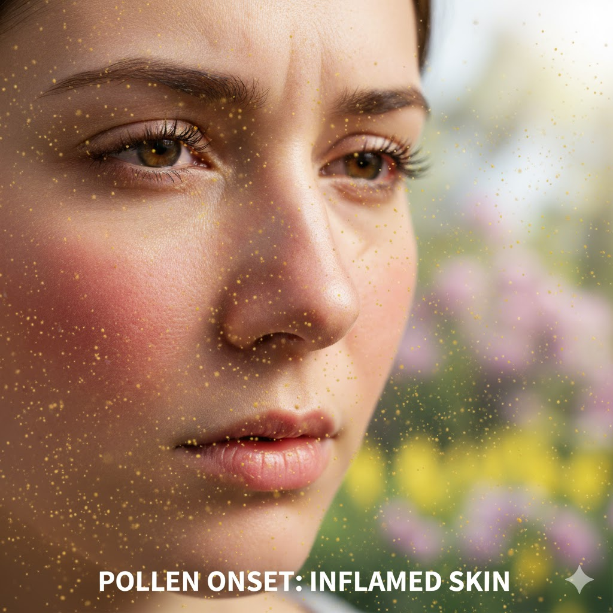
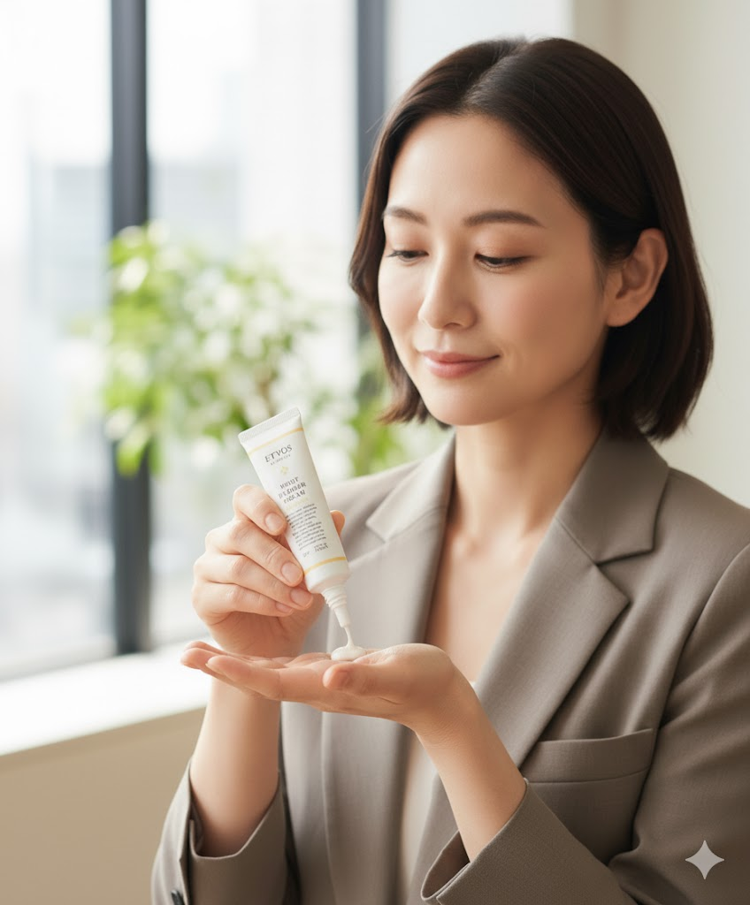

春：花粉や乾燥に負けないうるおいケア
春は気温の上昇とともに皮脂分泌が増える一方、花粉やホコリが肌荒れを引き起こしやすい季節です。オーガニック成分配合の保湿クリームやミストを取り入れて、外的刺激から肌を守りましょう。カモミールやアロエベラなどの成分は、肌の赤みやかゆみをやわらげ、しっとりと落ち着いた肌を保ちます。軽いテクスチャーのローションを重ねづけするのも効果的です。

30代女性・会社員：
春先の肌荒れが毎年の悩みでしたが、このオーガニッククリームを使うようになってから、頬の赤みが軽減されました。花粉の時期でも肌が安定していて、朝のメイク時間が楽しくなりました。